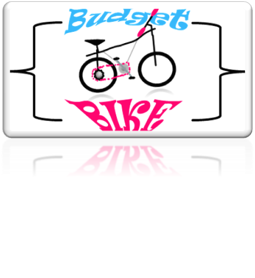

Projektpräsentation
Thema: Optimieren einer vorhandenen Datenbank
Codename "Opti-Bike"
Max Mustermann / Gruppe 8
JIKU IT-Solutions
Agenda
- I. Einführung
- II. Projektplanung
- III. Projektdurchführung
- IV. Implementierung
- V. Projektabnahme
- VI. Fazit
Der Praktikumsbetrieb
Die Firma JIKU* IT-Solutions GmbH in Stuttgart ist ein IT-Systemhaus und IT-Dienstleister, mit insgesamt 75 Mitarbeitern und 2 Geschäftsführern.
Neben Stuttgart gibt es noch vier weitere Standorte in Deutschland.
JIKU IT-Solution bietet Dienstleistungen in diesen Bereichen an:
- Beratung und Planung
- Softwareentwicklung
- Installation und Konfiguration
- Vor-Ort-Service und IT-Betreuung
- IT-Management
- Service-Desk (User-HelpDesk)
- IT-Outsourcing
Der Auftraggeber

BudgetBike ist ein kleines Unternehmen mit 8 Mitarbeitern und einem Geschäftsführer mit Sitz in Stuttgart, welches Fahrräder und diverse Ersatzteile verkauft sowie Fahrradreparaturen in der hauseigenen Werkstatt anbietet.
Projekt Codename "Opti-Bike"
Optimieren der Datenbank „bike“ von BudgetBike.
| Problemstellung: | Problemlösung: |
|---|---|
| Die SQL-Datenbank wurde nicht Fachmännisch erstellt. Durch diesen Umstand können Fehleingaben sowie Redundanzen (Doppelte Einträge) nicht vermieden werden. | Analysieren der Datenbank auf Optimierung, sowie anschließende Normalisierung der Datenbank durch erstellen neuer Tabellen und entfernen von Redundanzen. |